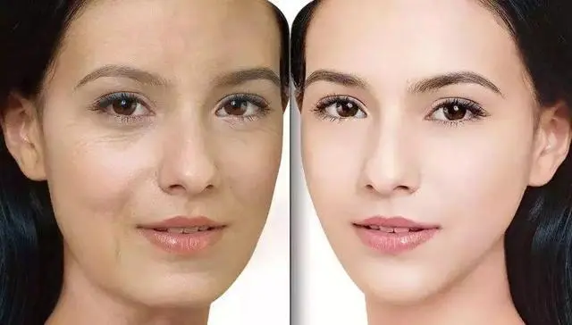
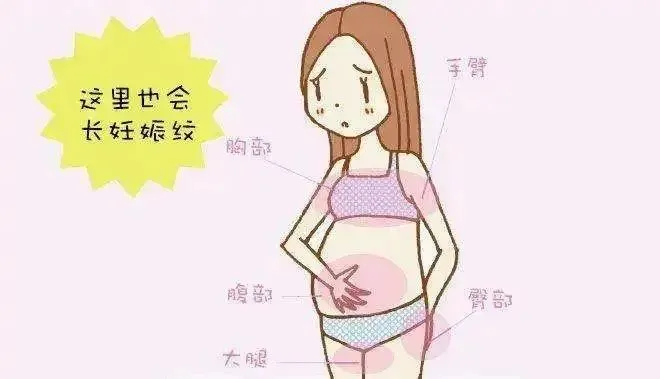

女性孕育生命，是一种美好与幸福，同时也意味着巨大的牺牲与付出！
美国乔治梅森大学的研究团队，通过分析1954名女性（20-44岁）的端粒长度发现，已生育女性的端粒长度比同龄未生育女性短4.2%，相当于细胞衰老了11年。

产后修复的“新力量”
自体生殖干细胞干细胞安全、有效
女性生产后，除了机体细胞迅速衰老外，还有诸如妊娠纹、松垮的肚子、阴道松弛、盆底功能障碍等等，严重影响 着女性生理和心理健康。这使许多女性都陷入了对婚姻和育儿的恐惧之中。生育带来的损伤成为了女性不愿面对的现实。让人欣慰的是，越来越多的女性开始正视产后问题，并积极寻求有效的修复方法。除了进行康复训练，自体女性卵巢干细胞的作用引人注目，有望成为产后修复的“新力量”！

生育后，女性的身体需要经历一个恢复的过程。除了传统的康复训练，自体女性生殖干细胞作为一种新兴的治疗手段，正逐渐展现出其独特的优势。
研究表明，自体女性生殖干细胞可以促进受损组织的再生和修复，如盆底肌肉、子宫等。它们通过释放生长因子、调节炎症反应和刺激局部干细胞增殖，帮助重建受损组织，恢复其结构和功能。此外，这些干细胞还能促进神经再生和血管再生，为受损部位提供充足的营养和氧气支持，加速修复过程。
抗衰老的“秘密武器”
除了产后修复，自体女性生殖干细胞还在抗衰老领域展现出巨大的潜力。随着年龄的增长，女性体内的干细胞数量逐渐减少，细胞再生能力下降，导致皮肤松弛、皱纹增多等衰老现象。而自体女性生殖干细胞作为一种年轻、活力充沛的细胞来源，可以为女性提供抗衰老的“秘密武器”。
通过补充自体女性生殖干细胞，可以激活女性体内的细胞再生能力，促进皮肤细胞的更新和修复。这些干细胞可以分化为多种皮肤细胞类型，如表皮细胞、成纤维细胞等，为皮肤提供充足的营养和水分支持，使皮肤恢复紧致、光滑、有弹性的年轻状态。同时，这些干细胞还能调节皮肤微环境，提高皮肤免疫力，减少皮肤问题的发生。
安全、有效的治疗选择
自体女性生殖干细胞具有高度的安全性和有效性。由于这些干细胞来源于患者自身，因此不存在免疫排斥和传染病风险。同时，由于它们具有高度的自我更新和分化能力，可以在受损部位进行精确的修复和再生，因此治疗效果显著且持久。
四、结语
自体女性生殖干细胞作为一种新兴的治疗手段，在守护产后妈妈健康与美丽中发挥着重要作用。通过促进受损组织的修复和再生以及抗衰老的作用机制，这些干细胞为女性朋友们提供了更安全、更有效的治疗选择。让我们期待自体女性生殖干细胞在未来能够发挥更大的潜力，为更多女性带来健康和美丽的福音！